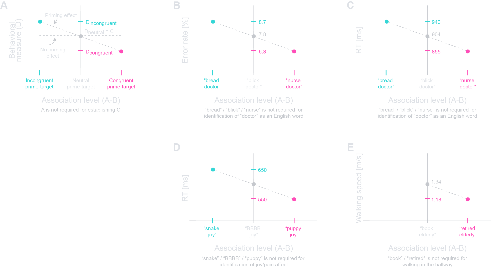
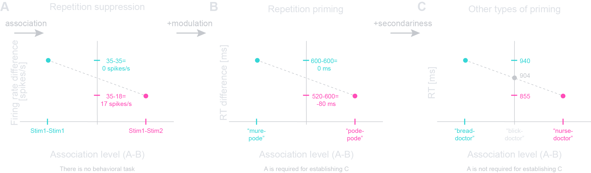

How to read this page
This is the framework the whole platform is built on. Every experiment here is described in the same four terms — A prime, B target, C baseline outcome, D measured outcome — which is what lets a design from linguistics sit beside one from economics and be compared.
Where a case below has been built as a runnable experiment, its heading is a link: click it to run that design yourself. Each experiment carries a link back to its case here, and both use the same colour, so you can move between the argument and the thing it describes without losing your place.
In short
Priming is a cross-disciplinary phenomenon that refers to the modulation of ongoing processing or behavior by associated information that is not explicitly relevant to the current goal or context. The definition set out here is meta-disciplinary: it unifies semantic, affective, social, perceptual and cross-modal instances of priming. The core definition is minimal and includes three jointly sufficient characteristics: association, secondariness, and modulation. The definition is assessed through an operational ABCD notation that refers to prime, target, baseline outcome, and measured outcome. Findings from lexical, affective, and social priming paradigms are re-examined to show the framework applied. As a counter example, analysis of repetition priming clarifies boundary conditions under which the secondariness characteristic fails, and the observed phenomenon cannot be labeled as priming. Across disciplines beyond cognitive psychology, the definition applies to instances of priming studied in social psychology, political science, linguistics, motivational psychology, moral psychology, economics, consumer behavior, and marketing. By providing a precise common language and diagnostic criteria, the framework provides a methodological scaffold that may reduce terminological drift, improve comparability and interpretations in multiple disciplines, and guide future experimental design.
1. An introduction to priming and semantic priming
The term priming was first introduced conceptually by Lashley (1951), who argued that “any theory of grammatical form which ascribes it to direct associative linkage of the words of the sentence overlooks the essential structure of speech” (p. 116), proposing instead that behavioral organization depends on “generalized schemata of action which determine the sequence of specific acts” (p. 122) through “preliminary facilitation of patterns of action” (p. 128). Lashley coined the term to describe how “prior to the internal or overt enunciation of the sentence, an aggregate of word units is partially activated or readied” (p. 119), with these elements remaining in “a state of partial excitation, held in check by the requirements of grammatical structure” (p. 119) rather than being directly expressed. Crucially, he emphasized that “the order is imposed by some other agent” (p. 116), arguing that syntax is a generalized pattern superimposed on specific acts rather than emerging from direct associative chains.
While Lashley provided the theoretical foundation for priming as pre-activation of indirect processing mechanisms, the first clear experimental demonstrations of automatic interference were provided even earlier by Stroop (1935), who showed that the meaning of an irrelevant word automatically slows color naming. Stroop interpreted the effect as associative inhibition, anticipating later conceptions of priming as competition between task-relevant and task-irrelevant activations. The first modern experimental demonstrations explicitly labeled as priming appeared only decades later, when Storms (1958) and Segal and Cofer (1960) showed that initial word presentations increased the likelihood of generating those words later. Meyer and Schvaneveldt (1971) subsequently formalized the semantic priming paradigm using lexical decision, translating Lashley’s theoretical insights into quantifiable reaction-time (RT) effects that became foundational for modern priming research.
To establish a common ground for a formal definition of the concept of priming, we begin with the semantic priming task of Meyer and Schvaneveldt (1971). In a typical semantic priming experiment, participants see a series of letter strings on a screen (e.g., “doctor” or “doctro”), one string at a time, and must rapidly decide whether each string, referred to as a “target”, constitutes a real word or not. Crucially, before the target appears, another string is briefly presented, referred to as the “prime”. The “priming effect” is the following. When the prime is semantically related to the target (e.g., “nurse” appearing before “doctor”), the RT for correct identification of the target as a word is significantly shorter than when the prime is a non-word string (Fig. 1C). On the other hand, longer RTs are observed when the semantic content of the prime is not related to the semantic content of the target (e.g., “bread” appearing before “doctor”).
In the semantic priming example, a “congruent prime” refers to a string that is semantically related to the target, leading to a facilitative effect on processing (Meyer and Schvaneveldt, 1971). In contrast, an “incongruent prime” refers to a prime that is semantically unrelated to the target (e.g., “bread” and “doctor”), and a “neutral prime” is a non-word string. The level of association between the prime and the target serves as an independent variable, a fundamental aspect of the experimental design (Neely, 1977). The effect of indirect processing mechanisms on the choices of the participant depends on the association between the prime and the target, and the resulting modulation is measured through a second, dependent variable. In multiple priming paradigms in cognitive psychology, the dependent variable is the reaction time or the accuracy of the choice of the participant (Hutchison, 2003).
The semantic priming example provides an accessible entry point into the phenomenon of priming, which has been studied in multiple disciplines including cognitive psychology (Schvaneveldt and Meyer, 1969; Neely, 1977; Schacter, 1987), social psychology (Bargh et al., 1996), political science (Mendelberg, 2001), linguistics (Marslen-Wilson, 1987; Zwitserlood, 1994), neuroscience (Henson, 2003; Grill-Spector et al., 2006), and economics (Thaler and Sunstein, 2008). Building on the intuitive semantic priming example, the formal definition below aims to encompass diverse manifestations of the priming phenomenon as studied across the various disciplines. It is the definition every experiment on this platform is described against.
2. Proposed priming definition: three core characteristics
The definition is based on three core characteristics, which serve as a “research filter”. Together, the three characteristics provide necessary (i.e., minimal) and sufficient conditions for defining the priming phenomenon. The three characteristics of every instance of the priming phenomenon are:
- Association: Involves at least two experiences, prime A, and target B, that may exhibit various levels or signs of association between one another (positive/zero/negative).
- Secondariness: The information provided by the prime A is not explicitly required for the task or goal, and is not needed to establish the baseline outcome C.
- Modulation: The secondary, associated information carried by A induces the measured outcome to be D.
In the above, we use the ABCD notation as follows. A, the prime, denotes the influencing information. B, the target, denotes the input that is required to be processed. C denotes the expected outcome in the absence of A. Finally, D denotes the measured outcome when A precedes (or co-occurs) with B. This syntax provides a shorthand and a convenient way to design and analyze experiments, occurrences, and other instances.
Box 1. Mapping the three characteristics of priming to an ABCD notation
- Association: relation between A (prime) and B (target).
- Secondariness: A is not required for establishing C (the baseline measured outcome).
- Modulation: the presence of A alters the measured outcome to be D (as opposed to C).
A few remarks are in place. First, the association between A and B may be positive (congruent), null (unrelated), or negative (incongruent). Accordingly, the first (association) and third (modulation) characteristics, as well as their interaction, can be visualized graphically (Fig. 1A). Second, A and B may be experienced simultaneously or sequentially and D may or may not be a measure of C. Third, the A and B components give rise to qualitatively different processes: a primary experience, arising from B and reflecting the current goal or ongoing experience, and a secondary experience, arising from A. The primary experience (arising from B) is accessible to the subject and supports the primary processing stream. The secondary experience (arising from A) is secondary to that primary stream. Finally, the second characteristic (secondariness) may arise from the irrelevance of A to C.

3. Case studies conforming to the proposed priming definition
The three cases below test the definition against cognitive psychology, moving from the semi-intuitive to the less intuitive. The first shows that the definition applies to the semantic priming effect it was built from; the next two show it holds where the connection is far less obvious. Each is runnable on this platform.
3.1. Re-examining the classical case: semantic priming ▶ run it
The semantic priming effect (Meyer and Schvaneveldt, 1971) may serve as an initial test bed for assessing our definition. To see this, consider that when a prime, for example “nurse”, reduces the reaction time required for the recognition of a target, for instance “doctor”, all three core characteristics are clearly evident:
- Association: The very foundation of the effect rests on the pre-existing, strong semantic association between the prime A and the target B, namely “nurse” and “doctor”. The manipulation of this associative strength, namely a prime A related to the target B in congruent cases, as opposed to A unrelated to B in incongruent cases, serves as the independent variable (abscissa in Fig. 1).
- Secondariness: The identity of A, here the prime string (e.g., “nurse”) is not required for establishing the outcome C, namely for the task of judging whether the target string B (e.g., “doctor”) is a real word.
- Modulation: The presentation of a prime A may pre-activate related concepts. When the prime A and the target B are associatively linked (Fig. 1BC, right hand), the pre-activated information from A interacts with the processing of B. This causes an association-dependent change of D, the error rate (Fig. 1B) or the RT (Fig. 1C).
The re-examination of the semantic priming phenomenon underscores how the proposed definition (Section 2) accurately captures the essence of the widely studied priming phenomenon (Section 1).
Run semantic priming on the platform3.2. A semi-intuitive example: affective priming ▶ run it
Moving beyond purely semantic relationships, affective priming demonstrates how emotional cues can automatically influence subsequent processing. We focus on affective priming here to expand the discussion to a semi-intuitive yet powerful illustration of the proposed definition (Box 1). A foundational example comes from the study of Fazio et al. (1986), which explored how attitudes are automatically activated.
In a typical affective priming paradigm, participants are briefly presented with a prime A, which is an image that may have a positive valence (e.g., “puppy”) or a negative valence (e.g., “snake”). Immediately following the presentation of the prime, the participants are presented with a target B, which is a word that names a specific affect (e.g., “joy” or “pain”). The task of the participants is to categorize the emotional valence (positive or negative) of the target B as quickly as possible. The behavioral measure is the RT required before correctly categorizing the valence of the target.
When the prime and target are congruent (e.g., “puppy-joy” or “snake-pain” pairs), the RT of the participants for correctly categorizing the valence is consistently shorter than the RT preceding the categorization of a target preceded by an incongruent prime (e.g., “puppy-pain” or “snake-joy” pairs). Neutral primes (e.g., “BBBB-joy” or “BBBB-snake”) are associated with intermediate RTs. These findings demonstrate that attitudes toward an object are automatically activated upon exposure, influencing subsequent judgments and behavior.
- Association: An inherent emotional association exists between the prime A (e.g., “snake” or “puppy”) and the valence of the target B (e.g., “joy”). The manipulation lies in the association, namely the incongruency or the congruency, between the emotional valences of A and B (Fig. 1D, abscissa).
- Secondariness: The emotional content of A, the prime image (e.g., the “puppy”) is not required for the specific task of categorizing the valence of B, the target word.
- Modulation: The prime A may automatically and involuntarily activate an associated affective state, possibly operating through automatic indirect processing mechanisms. When the valence of the prime A is congruent with the valence of the target B (e.g., “puppy-joy” pair), the pre-activated affective state facilitates processing, shortening RT (from C to Dcongruent; Fig. 1D). Conversely, incongruent prime-target pairs (e.g., “puppy-pain”) create an opposite modulation, resulting in measurable RT lengthening (Dincongruent; Fig. 1D).
The affective priming paradigm of Fazio et al. (1986) shows how emotional primes influence the evaluation of subsequent affective targets. It illustrates the three core characteristics of priming: (i) the association between prime and target valences (e.g., “puppy–joy” vs. “snake–joy”); (ii) the secondariness of the prime to the explicit task of categorizing the valence of the target; and (iii) the modulation of performance, with RTs being shorter for congruent pairs and longer for incongruent pairs (Fig. 1D). This example highlights how the definition of priming extends beyond semantic associations (Section 3.1) to the affective domain.
Run affective priming on the platform3.3. A less intuitive example: social priming ▶ run it
To showcase the reach of the proposed definition into domains beyond “standard” cognitive tasks, we consider social priming. Studies by Bargh and colleagues (Bargh et al., 1996, 1999) revealed how subtle, often subliminal, environmental cues can influence complex social behaviors. In a classic social priming study (Bargh et al., 1996), participants were exposed to words related to the stereotype of “elderly” (e.g., “Florida”, “bingo”, “grey”, or “retired”) or to neutral words (e.g., “lamp”, “desk”, or “book”) while performing a scrambled-sentence task. In this task, participants were required to form grammatically correct sentences from sets of presented words, where a given set contained either the stereotype-related terms, or only neutral terms. Crucially, the participants were not informed that some of the words might have been related to the “elderly” stereotype. Afterwards, the walking speed down the hallway was unobtrusively measured to assess the priming effect. The researchers found that subjects exposed to words congruent with the elderly stereotype walked more slowly upon leaving the experiment room, compared with those exposed to neutral words.
Within the present framework (Box 1), A refers to the prime words, either stereotype-activating or neutral (the latter serving as a control prime). B refers to the activated “elderly” stereotype, which was never explicitly mentioned in the task. C denotes the typical walking speed after being exposed to neutral primes, and D denotes the walking speed that follows exposure to elderly-related primes, which are congruent with the stereotype. As shown below, both association and modulation are present, and secondariness holds because prime content was not required – neither for the sentence task, nor for the instruction to walk. Note that although the paradigm lacked an incongruent condition (e.g., prime words associated with a “youth” stereotype), all three characteristics are satisfied:
- Association: An associative link exists between the prime words A (e.g., “Florida” or “bingo”) and the (unmentioned) target stereotype of “elderly” B. In contrast, neutral prime words (e.g., “lamp” or “book”) lack such an association with B. This distinction between stereotype-activating and neutral primes defines the varying levels of initial association (Fig. 1E).
- Secondariness: The prime words A are not required for the scrambled-sentence task posed to the participants.
- Modulation: The activated stereotype, namely the “elderly” target B, interacts with the typical walking behavior of the participants. This results in a measurable modulation: walking speed decreased after exposure to stereotype-related primes (Dcongruent), compared with the baseline walking speed following neutral primes (C).
This situation demonstrates how exposure to irrelevant primes alters the ongoing experience of the subjects. We note that in the experiment of Bargh and colleagues (1996) there were two types of prime A: neutral and congruent (elderly-related) words, but in contrast to the previous examples (Sections 3.1, 3.2) there was no “incongruent” condition (compare Fig. 1A with Fig. 1E). Furthermore, there was only one target B, namely the elderly stereotype. Thus, the two types of A were either stereotype-activating or not. Nevertheless, the formal three-characteristic definition (Section 2, Box 1) applies to the social priming example as well.
Run social priming on the platform4. Exceptions: repetition priming and repetition suppression
In the priming paradigms discussed up to this point, the two stimuli A and B were distinct, allowing to identify which element has primary relevance to the task (B) and which is secondary (A). However, when the prime and target are identical, a distinction between A and B no longer exists, except for their chronological ordering. Stated differently, repetition of the same stimulus conflates task-relevant and task-irrelevant elements, obscuring whether an irrelevant influence can be isolated.
Repetition priming (RP; Schacter, 1987; Tulving and Schacter, 1990) is a phenomenon in which the exact same stimulus is repeated. In an early study, Scarborough and colleagues (Scarborough et al., 1977) required participants to perform a lexical discrimination task on four-letter strings, and to decide whether the presented string is a word (e.g., “fist” or “tree”) or a non-word (e.g., “pode” or “mure”). When two identical words were presented sequentially, separated by a varying number of other trials, the researchers found that RTs decreased from approximately 600 ms on the first presentation to 520 ms on the second presentation, representing 80 ms facilitation (Fig. 2B). However, when the second word was distinct from the first, RTs remained at baseline (600 ms for both presentations). A similar result was observed for strings without a semantic value, namely for sequentially-presented identical non-word strings, where the RT shortened by about 100 ms, from 720 ms in the first presentation to 620 ms in the second. This phenomenon is referred to as RP.
When prime and target are identical, the distinction between A and B no longer exists except for their chronological ordering. This is not A followed by B, but rather B given twice (e.g., “fist” presented twice). The fact that the subject is instructed to respond to each presentation separately makes the first stimulus (A) of primary importance for the response to that first stimulus. Thus, although A is clearly of secondary relevance for the response to the second stimulus (B), A has already been processed as having a primary relevance. Therefore, in RP, the secondariness characteristic does not apply.
The behavioral improvement in “congruent” (i.e., identical) trials during RP paradigms is accompanied by a phenomenon referred to as repetition suppression (RS), a reduction in neural activity following repeated exposure to a stimulus (Desimone, 1996; McMahon and Olson, 2007). McMahon and Olson (2007) conducted a visual discrimination task which replicated key features of the Scarborough task, with two awake behaving monkeys. The subjects were shown a visual stimulus that was either symmetric or not, and required to saccade in a direction that depended on the features of the presented stimulus (Fig. 2A). The RT was approximately 324 ms, but when the same stimulus was repeated, the RT was approximately 308 ms, representing a priming effect of about 16 ms faster. Simultaneously, the authors recorded from 152 neurons in inferotemporal cortex and found that the same stimulus set produced RS. Specifically, the mean firing rates (computed in an adjustable window that started 80 ms after stimulus onset and ended with the saccade onset) decreasing by approximately 2 spikes/s. Control trials, where different stimuli were presented in sequence, did not produce these effects. Importantly, the magnitudes of the behavioral and neuronal suppression were not correlated across trials, suggesting that while the two phenomena co-occur, RS does not cause RP.

The relationship between the observed decrease in neural activity (during RS) and the behavioral facilitation (during RP) constitutes a longstanding puzzle in the literature (Gotts et al., 2012). While solving this puzzle requires further empirical investigation, our definition (Box 1) may help clarifying whether either RP or RS should be classified as priming phenomena. For that, we evaluate RP and RS using the priming definition:
- Association: In congruent trials of both RP and RS, consecutive stimuli A and B are identical. This yields a maximal associative link between A and B. Therefore, the association characteristic is trivially satisfied in both cases.
- Secondariness: In RP, the “prime” and “target” are two identical stimuli (e.g., “fist” presented twice). Because an action is carried out following the first appearance, the prime A becomes primary (for the response to A), even though it is technically secondary (for the response to B). Stated differently, in RP, the first appearance of the stimulus creates a pre-activation of direct, instead of indirect processing pathways.
- Modulation: In RS, the absence of behavioral measures precludes any assessment of modulation at the behavioral level, and therefore the modulation characteristic does not apply. In RP, behavioral modulation is observed upon repeated exposure.
Neither RP nor RS qualify as instances of priming. RS lacks a behavioral task, and hence the C/D elements are absent. As a result, the secondariness and modulation characteristics do not apply. This analysis clarifies RP and RS as conceptual boundary cases, demonstrating how the proposed definition may serve as a diagnostic tool for distinguishing true priming phenomena from superficially similar effects. The progression from RS, via RP, to semantic priming illustrates increasing conformity with the meta-disciplinary definition of priming. RS (Fig. 2A) exhibits only association; RP (Fig. 2B) adds modulation by introducing a behavioral task; and semantic priming (Fig. 2C) achieves “full priming status” by adding secondariness through distinct prime and target stimuli. Fig. 2C intentionally reproduces Figure 1C to illustrate the endpoint of the RS → RP → semantic priming progression.
5. Cross-disciplinary priming
Beyond cognitive psychology, work in multiple human-related disciplines has independently used the term priming to describe behavioral phenomena that were never formally unified under a single definition. We observe that, with the exceptions described in Section 4, every phenomenon labeled priming in the literature satisfies the same three characteristics formally identified in our definition (Box 1). This includes studies in linguistics, motivation science, moral psychology, economics, education, political communication, and everyday behavior. Seven cases that are explicitly named priming in the literature are analysed below. Where a case can be run in a browser it is built as an experiment here, and its heading links to it.
5.1. Syntactic priming ▶ run it
PsycholinguisticsIn psycholinguistics, exposure to a syntactic structure increases the likelihood that speakers later use the same structure. This phenomenon has come to be known as structural or “syntactic priming”. For example, Bock (1986) asked participants to describe pictures immediately after hearing sentences in either active or passive voice. Even though the prime sentence was unrelated to the content of the picture, participants systematically reused the primed syntactic form. The design captures the full priming structure: activation of syntactic associations, secondariness of the prime relative to message content, and modulation of the structure-selection probability.
5.2. Goal priming ▶ run it
Motivational psychologyMotivational psychology has demonstrated that achievement-related cues (e.g., “win”, “compete”, and “succeed”) can activate goals without explicit instructions. These effects are discussed in the literature on “goal priming” and priming of goals. For example, Bargh and Gollwitzer (1994) embedded achievement words within a scrambled-sentence task. Participants later performed word-search puzzles. Despite no change to incentives or task rules, exposure to achievement cues reliably increased persistence. Specifically, participants found more words and continued working longer after being signaled to stop.
5.3. Moral priming ▶ run it
Moral psychologyStudies in moral psychology show that exposure to moral concepts can modulate ethical decisions. These effects are discussed under the label “moral priming” in work on moral identity and behavior. For example, Aquino et al. (2009) implemented a moral manipulation by asking participants to recall and list moral rules, drawing on the Ten Commandments, before making decisions in ethically relevant tasks. The moral reminder was not part of the requirements of the task, but nevertheless increased the accessibility of moral identity and shifted moral intentions and behaviors.
5.4. Money priming ▶ run it
EconomicsA central and well-established example of “money priming” comes from the economics literature. This line of work shows that subtle financial cues can shift economic and interpersonal decisions even when the cues are irrelevant to the task at hand. Cues may consist of images of currency, words related to income, or desk screensavers showing money. For example, Vohs et al. (2006) demonstrated that participants subtly exposed to money-related cues consisting of scrambled-sentence tasks containing financial terms or visual images of currency, behaved more self-sufficiently in subsequent, unrelated tasks. Although the money cue played no role in the target tasks, it reliably modulated behavior: participants preferred to work alone, maintained greater interpersonal distance, sought less help, and offered less help to others.
5.5. Racial priming
Political sciencePolitical science has extensively documented “racial priming”, in which implicit racial cues embedded in campaign messages shift evaluations of candidates. An example is given by analyzing the “Willie Horton” advertisement (Mendelberg, 2001), which demonstrated that a criminal-justice message paired with an implicit racial cue shifted public evaluation of potential candidates. However, the shift occurred only when the cue remained implicit: once the racial strategy became explicit, the effect vanished.
5.6. Naturalistic priming
Consumer behaviorCertain real-world behaviors have been described as “priming in naturalistic settings”, where contextual background cues shift spontaneous choices. In consumer behavior and multisensory design research, the term priming is used when contextual visual or auditory cues bias expectations and judgments about products without altering the products themselves. Dijksterhuis (2016) reviews experiments in which ambient visual or auditory cues are presented before tasting or choosing a product. The cues, that include packaging color, contextual lighting, or background soundscapes, do not change the physical properties of the product. Nevertheless, the cues systematically bias perceived flavor intensity, quality, or preference.
5.7. Advertising priming ▶ run it
MarketingWe conclude by discussing research on consumer behavior, which documented that incidental brand exposure can influence product choice through priming mechanisms. For quantification, Ferraro et al. (2009) examined how brief, incidental exposures to other consumers using a product of a certain brand affected the own choices of the observers to brands. Participants viewed 20 photographs (2 s each) of people engaged in everyday activities (e.g., sitting on a bench or having lunch), with “Dasani” bottled water visible near the focal person in zero, four, or 12 of the photos. The brand was not the focal point of the images, and participants were instructed to focus on facial expressions. After viewing the photos, participants were required to select bottled water of one of four brands. For participants unaware of the brand exposure, choice of the “Dasani” brand increased from 17% in the zero-exposure condition, to 22% with four exposures, and to 40% with 12 exposures. The authors attributed this pattern to perceptual fluency, whereby repeated exposure increases the ease of processing a brand. This interpretation was supported by findings that the effect disappeared when participants could attribute experienced fluency to background music and that excessive exposure led to saturation effects.
To summarize, the ABCD notation and the three-characteristic definition developed based on semantic priming (Sections 1–2) readily applies to priming as studied in cognitive psychology (Section 3) and to priming instances studied in multiple other disciplines (Section 5). In each and every case, the ABCD notation holds and the three characteristics apply. This convergence suggests that these components and characteristics guide the use of the term priming across disciplines.
6. Discussion
The definition is meta-disciplinary and rests on three jointly sufficient characteristics, association, secondariness, and modulation, operationalized through an ABCD notation. In this framework, A (the prime) denotes influencing information, B (target) represents the input requiring processing, C (baseline outcome) reflects performance without the prime, and D (measured outcome) captures performance when A precedes or co-occurs with B. This formalization unifies diverse instances of the priming phenomenon as studied within the field of cognitive psychology. In semantic priming (Meyer and Schvaneveldt, 1971), the prime “nurse” (A) and target “doctor” (B) exhibit strong semantic relation (association); A is unnecessary for the lexical decision task (secondariness), yet facilitates reaction time (modulation). In affective priming (Fazio et al., 1986), the emotional valence is shared between prime and target (association), with A being irrelevant to valence categorization of B (secondariness), yet modulating response latency (modulation). In social priming (Bargh et al., 1996), elderly-related words (A) and the elderly stereotype (B) are linked (association), with A being unnecessary for the sentence task or walking instruction (secondariness), yet producing changes of gait speed (modulation). Thus, the ABCD framework provides a common analytical language transcending specific priming paradigms.
Comparison with existing definitions of priming
The framework builds upon and extends influential prior conceptualizations of priming. The seminal characterization of priming by Tulving and Schacter (1990) emphasized dissociations from episodic and semantic memory, demonstrating that priming operates at a pre-semantic level, shows stochastic independence from explicit memory, and remains intact in amnesia (Warrington and Weiskrantz, 1974; Graf et al., 1984). Their evidence that access to primed information is highly specific, showing zero correlation between successive tests with different cues directed at the same targets, supports our modulation characteristic. The ABCD notation provides operational criteria that complement their theoretical framework and extend applicability across paradigms and modalities.
Two prominent frameworks contributed to our understanding of priming. Schacter (1987) characterized priming as “a nonconscious form of human memory, which is concerned with perceptual identification of words and objects”, providing a theoretical foundation for understanding implicit memory. Dehaene et al. (1998) used neuroimaging to demonstrate that masked primes below awareness threshold can activate semantic networks, revealing important neural mechanisms of unconscious processing. These studies are instrumental in establishing priming as a distinct memory phenomenon.
It complements and extends these approaches in several ways. First, regarding consciousness, while Schacter (1987) and Dehaene et al. (1998) emphasized nonconscious processing, which indeed occurs in many paradigms, the foundational semantic priming study (Meyer and Schvaneveldt, 1971) employed fully visible, easily perceivable prime stimuli presented for 1000–2000 ms. Similarly, affective priming (Fazio et al., 1986) used clearly visible prime images, and social priming studies (Bargh et al., 1996) required participants to actively process prime words. In fact, the conscious awareness of primes has been characteristic of priming research from the inception of the paradigm (Neely, 1977; Hutchison, 2003). The framework encompasses both conscious and unconscious priming by recognizing that what distinguishes priming is not whether the prime is unconscious, but rather that its influence operates through indirect processing mechanisms. In priming, participants are not aware that the prime is modulating their performance on the target task, even when they are fully aware of the prime itself (Jacoby, 1991; Bargh and Chartrand, 1999). The secondariness characteristic captures this implicit influence more generally than by invoking un/consciousness.
Second, the prior focus on perceptual identification (Schacter, 1987) and on investigating semantic word processing (Dehaene et al., 1998) is appropriate for specific research domains. In contrast, this framework shows that priming extends more broadly to affective judgments (Fazio et al., 1986), and social behavior (Bargh et al., 1996; Mendelberg, 2001).
Third, treating repetition priming as a boundary case offers additional precision beyond earlier frameworks — and it is runnable here, so the boundary can be demonstrated rather than asserted. When A and B are identical, A becomes primary for its own response, violating secondariness, even though association (maximal) and modulation are present (Scarborough et al., 1977). Thus, not every phenomenon referred to priming in the literature is indeed priming.
Contributions to cognitive research
The definition offers several advantages. First, it provides diagnostic criteria for distinguishing genuine priming from superficially similar phenomena. The three-characteristic framework enables systematic comparison across paradigms by mapping studies onto ABCD notation, transforming apparent failures to replicate into opportunities to identify boundary conditions. Second, the emphasis on association as a continuous variable encourages investigation of parametric effects (Neely, 1977; Collins and Loftus, 1975), moving beyond categorical contrasts to examine association-modulation functions. Third, the framework clarifies the role of awareness: A need not be consciously processed for its task relevance, but subjects may be aware of A itself, resolving debates about whether awareness abolishes priming (Jacoby, 1991).
Contributions to other disciplines
Beyond cognitive psychology, the framework has implications for social psychology, which has faced reproducibility challenges (Bargh and Chartrand, 1999). The definition applies to priming as studied in fields other than cognitive psychology, including psycholinguistics (syntactic priming; Bock, 1986), motivational psychology (goal priming; Bargh and Gollwitzer, 1994), and moral psychology (moral priming; Aquino et al., 2009). Furthermore, the definition applies to priming as studied in other disciplines, including economy (money priming; Vohs et al., 2006), political science (racial priming; Mendelberg, 2001), and consumer behavior (naturalistic priming; Dijksterhuis, 2016; and advertising priming; Ferraro et al., 2009).
The cross-disciplinary applicability of the proposed definition suggests that the framework can directly improve priming research in other fields. In psycholinguistics, it clarifies which effects count as genuine syntactic priming by requiring pre-existing structural associations and excluding learning-during-task. In political science, it separates racial priming from mere persuasion by demanding that the racial cue be formally irrelevant to the decision yet still influence it through stored associations. In economics, it distinguishes true “money priming” from shifts in explicit beliefs by requiring that the money cue be irrelevant to the economic choice while still modulating behavior through associative conflict. Beyond sharpening operational definitions, the proposed framework makes these domains accessible to mechanistic neuroscience research: once adequate measurement tools are employed, the association vs. secondariness conflict architecture may be mapped onto common neural mechanisms.
Implicit short-term memory and priming
Classical models distinguish between memory along multiple axes (Atkinson and Shiffrin, 1968; Baddeley and Hitch, 1974; Squire, 1987; Kandel et al., 2021). One division is along the temporal axis, differentiating between sensory memory (a fraction of a second), short term memory (seconds), intermediate term memory (seconds to minutes), and long-term memory (hours to lifetime). Along the functional axis, working memory refers to operations within a given task, whereas reference memory refers to operations between trials (Olton et al., 1979). Long-term memory is functionally subdivided into explicit (declarative, i.e., episodic and semantic) and implicit (non-declarative, i.e., procedural, associative, and non-associative) systems (Tulving, 1972; Cohen and Squire, 1980; Squire, 1987). Classically, priming has been included as a fourth subset of implicit long-term memory (Kandel et al., 2021). Indeed, classical paradigms have studied priming over the long-term (persistence over days or weeks; Jacoby and Dallas, 1981; Graf and Schacter, 1987), and long-term priming conforms to our definition.
Our analysis suggests that short-term priming may reflect implicit short-term memory operations, transient modulation of processing systems operating independently of conscious recollection. This characterization predicts that implicit short-term memory should exhibit temporal dynamics distinct from both working memory (which requires rehearsal; Baddeley and Hitch, 1974) and procedural learning (which shows gradual acquisition; Cohen and Squire, 1980). Specifically, priming should show rapid formation without rehearsal, decay functions different from working memory’s susceptibility to interference (Jonides et al., 2008), and faster time courses than procedural learning. The new definition provides, for the first time, operational tools to systematically investigate this long-neglected memory domain. Since short-term priming also conforms to our definition, the discussion suggests that implicit short-term memory and long-term priming are both instances of priming, filling a fundamental gap in our understanding memory architecture.
Neural correlates of priming
The ABCD notation enables development of new paradigms to search for neural correlates of implicit short-term memory by systematically varying the temporal interval between A and B while measuring both behavioral modulation (D versus C) and neural activity. Specific predictions emerge. First, neuronal activity will reveal rapid changes in stimulus-evoked responses when B follows A. Second, neuronal changes may correlate with behavioral facilitation but not with explicit memory for A. And third, disruption of the neuronal activity patterns will impair priming behavior, while sparing working and long-term memory.
Critically, the framework enables investigation of priming in animal models, particularly rodents, which allow measurements impossible in human subjects. Recent work has demonstrated short-term auditory priming in freely-moving mice (Sivroni et al., 2023), an approach enabled by the ABCD framework. During the same time, high-resolution electrophysiological recordings were conducted. The combination of an animal behavioral task with multiple single-neuron and local circuit measurements goes beyond the resolution of human neuroimaging techniques such as fMRI or EEG. The combined approach may enable a direct test of the abovementioned neural predictions, bridging behavioral phenomena and cellular mechanisms of implicit short-term memory at a level of detail previously inaccessible.
Limitations
While the three-characteristic framework provides conceptual clarity and diagnostic power, it also has limitations. First, the ABCD notation requires clear identification of the prime and target components, which may be ambiguous in highly naturalistic or reciprocal social interactions. Second, secondariness can be difficult to determine when task relevance is graded rather than categorical. Third, the framework is descriptive rather than mechanistic: it specifies what qualifies as priming, but not how indirect processing is implemented neurally. Finally, applying the definition across disciplines requires careful consideration of measurement noise and contextual confounds that differ between fields.
Future directions
This is a conceptual characterization of priming, defined by the three characteristics of association, secondariness, and modulation, without committing to specific neural or computational mechanisms. This provides a stable foundation for future mechanistic work. A natural next step is to investigate the processes that may underlie priming phenomena: those that are shared across priming of all kinds, and those specific to particular subclasses (e.g., semantic, affective, social, perceptual, syntactic, goal, money, short-term, or long-term priming). The framework is designed to support such efforts by offering a unified behavioral structure against which candidate mechanisms can be evaluated, compared, and constrained.
Several specific directions merit investigation. First, neurophysiological studies could aim to identify neural populations that track priming effects across different paradigms, potentially revealing shared substrates. Second, computational models may attempt to formalize the relationship between priming and other learning phenomena, clarifying whether priming reflects a distinct mechanism or emerges from general associative principles. And third, developmental and comparative studies could work towards establishing conditions under which priming capabilities emerge, and which aspects are conserved, phylogenetically or culturally.
Across paradigms, a consistent temporal pattern emerges: conscious priming is typically stronger at short delays, whereas unconscious priming often persists or strengthens at longer delays (Charlesworth and Banaji, 2019; Graf and Schacter, 1987; Kouider and Dehaene, 2007; Kunst-Wilson and Zajonc, 1980; Roediger and McDermott, 1993; Seamon et al., 1995; Smarandescu and Shimp, 2015). Specifically, long-term robustness of implicit effects has been documented in political cues (Mendelberg, 2008), mere-exposure preferences (Zajonc, 1968), and subliminal affective influences (Sweeny et al., 2009). At immediate timescales, conscious priming shows equal or greater effects (Van den Bussche et al., 2009) and no verified unconscious advantage. This divergence may reflect partly distinct mechanisms, where rapid strategic facilitation lies at the basis for conscious processing, whereas slower consolidation underlies automatic associations. However, shared mechanisms also likely may contribute. In particular, neurons that encode conflict between automatic and controlled pathways (Botvinick et al., 2001) may support both conscious and unconscious priming across timescales. Notably, the literature lacks a formal construct for implicit short-term memory, despite its central role in short-lived priming effects in humans and animals. Clarifying this construct and mapping its temporal boundaries represents a key direction for future work.
Concluding remarks
The meta-disciplinary definition provides a unifying framework for understanding priming across domains. By identifying three core characteristics and operationalizing them through an ABCD notation, it offers conceptual clarity and a methodological tool — and on this platform, a working one: the notation is what every experiment here is built and checked against. The framework builds upon and extends prior contributions (including Schacter, 1987; Tulving and Schacter, 1990; Dehaene et al., 1998), broadening the scope of priming to encompass both conscious and unconscious priming across domains within and beyond cognitive psychology. The framework highlights implicit short-term memory, an important but decades-long neglected component absent from memory architecture diagrams. Finally, the framework provides operational tools for investigating the thread to common various instances of the priming phenomenon systematically, spanning cellular, network, and behavioral mechanisms.
References
Aquino, K., Freeman, D., Reed, A., Lim, V. K. G., and Felps, W. (2009). Testing a social-cognitive model of moral behavior: The interactive influence of situations and moral identity centrality. Journal of Personality and Social Psychology, 97(1), 123–141.
Atkinson, R. C., and Shiffrin, R. M. (1968). Human memory: A proposed system and its control processes. In K. W. Spence and J. T. Spence (Eds.), The psychology of learning and motivation (Vol. 2, pp. 89–195). Academic Press.
Baddeley, A. D., and Hitch, G. (1974). Working memory. In G. A. Bower (Ed.), The psychology of learning and motivation (Vol. 8, pp. 47–89). Academic Press.
Bargh, J. A., and Gollwitzer, P. M. (1994). Environmental control of goal-directed action: Automatic and strategic contingencies between situations and behavior. Nebraska Symposium on Motivation, 41, 71–124.
Bargh, J. A., and Chartrand, T. L. (1999). The unbearable automaticity of being. American Psychologist, 54(7), 462–479.
Bargh, J. A., Chen, M., and Burrows, L. (1996). Automaticity of social behavior: Direct effects of trait construct and stereotype activation on action. Journal of Personality and Social Psychology, 71(2), 230–244.
Bock, J. K. (1986). Syntactic persistence in language production. Cognitive Psychology, 18(3), 355–387.
Botvinick, M. M., Braver, T. S., Barch, D. M., Carter, C. S., and Cohen, J. D. (2001). Conflict monitoring and cognitive control. Psychological Review, 108(3), 624–652.
Caruso, E. M., Shapira, O., and Landy, J. F. (2017). Show me the money: A systematic exploration of manipulations, moderators, and mechanisms of priming effects. Psychological Science, 28(8), 1148–1159.
Charlesworth, T. E. S., and Banaji, M. R. (2019). Patterns of implicit and explicit attitudes: I. Long-term change and stability from 2007 to 2016. Psychological Science, 30(2), 174–192.
Cohen, N. J., and Squire, L. R. (1980). Preserved learning and retention of pattern-analyzing skill in amnesia: Dissociation of knowing how and knowing that. Science, 210(4466), 207–210.
Collins, A. M., and Loftus, E. F. (1975). A spreading-activation theory of semantic processing. Psychological Review, 82(6), 407–428.
Dehaene, S., Naccache, L., Le Clec’H, L., Koechlin, E., Baciu, M., and D’Escatha, J. (1998). Imaging unconscious semantic priming. Nature, 395(6698), 597–600.
Desimone, R. (1996). Neural mechanisms for visual memory and their role in attention. Proceedings of the National Academy of Sciences, 93(24), 13494–13499.
Dijksterhuis, G. (2016). Multisensory flavor priming. In B. Piqueras-Fiszman and C. Spence (Eds.), Multisensory flavor perception (pp. 133–153). Elsevier.
Fazio, R. H., Sanbonmatsu, D. M., Powell, M. C., and Kardes, F. R. (1986). On the automatic activation of attitudes. Journal of Personality and Social Psychology, 50(2), 229–238.
Ferraro, R., Bettman, J. R., and Chartrand, T. L. (2009). The power of strangers: The effect of incidental consumer brand encounters on brand choice. Journal of Consumer Research, 35(5), 729–741.
Gotts, S. J., Chow, C. C., and Martin, A. (2012). Repetition priming and repetition suppression: A case for a unified explanation. Trends in Cognitive Sciences, 16(12), 596–604.
Graf, P., Squire, L. R., and Mandler, G. (1984). The information that amnesic patients do not forget. Journal of Experimental Psychology: Learning, Memory, and Cognition, 10(1), 164–178.
Graf, P., and Schacter, D. L. (1987). Selective effects of interference on implicit and explicit memory for new associations. Journal of Experimental Psychology: Learning, Memory, and Cognition, 13(1), 45–53.
Grill-Spector, K., Henson, R., and Martin, A. (2006). Repetition and the brain: Neural models of stimulus-specific effects. Trends in Cognitive Sciences, 10(1), 14–23.
Hurwitz, J., and Peffley, M. (1997). Public opinion and the politics of racial resentment in the American case. Journal of Politics, 59(3), 804–826.
Hutchison, K. A. (2003). Attentional control of word recognition. Journal of Experimental Psychology: Learning, Memory, and Cognition, 29(4), 543–559.
Jacoby, L. L. (1991). A process dissociation framework: Separating automatic from intentional uses of memory. Journal of Memory and Language, 30(5), 513–540.
Jacoby, L. L., and Dallas, M. (1981). On the relationship between autobiographical memory and perceptual learning. Journal of Experimental Psychology: General, 110(3), 306–340.
Lashley, K. S. (1951). The problem of serial order in behavior. In L. A. Jeffress (Ed.), Cerebral mechanisms in behavior (pp. 112–136). Wiley.
Lee, A. Y., and Labroo, A. A. (2004). The effect of conceptual and perceptual fluency on brand evaluation. Journal of Marketing Research, 41(2), 151–165.
McMahon, D. B. T., and Olson, C. R. (2007). Repetition suppression in monkey inferotemporal cortex: Relation to behavioral priming. Journal of Neurophysiology, 97(5), 3532–3543.
Mendelberg, T. (2001). The race card: Campaign strategy, implicit messages, and the norm of equality. Princeton University Press.
Meyer, D. E., and Schvaneveldt, R. W. (1971). Facilitation in recognizing pairs of words: Evidence of a dependence between retrieval operations. Journal of Experimental Psychology, 90(2), 227–234.
Minton, E. A., Cornwell, T. B., and Kahle, L. R. (2017). A theoretical review of consumer priming: Prospective theory, retrospective theory, and the affective–behavioral–cognitive model. Journal of Consumer Behaviour, 16(4), 309–321.
Neely, J. H. (1977). Semantic priming and retrieval from lexical memory: Roles of inhibitionless spreading activation and limited-capacity attention. Journal of Experimental Psychology: General, 106(3), 226–254.
Pickering, M. J., and Ferreira, V. S. (2008). Structural priming: A critical review. Psychological Bulletin, 134(3), 427–459.
Scarborough, D. L., Cortese, C., and Scarborough, H. S. (1977). Frequency and repetition effects in lexical memory. Journal of Experimental Psychology: Human Perception and Performance, 3(1), 1–17.
Schacter, D. L. (1987). Implicit memory: History and current status. Journal of Experimental Psychology: Learning, Memory, and Cognition, 13(3), 501–518.
Shah, J. Y., and Kruglanski, A. W. (2003). When opportunity knocks: Bottom-up priming of goals by means and its effects on self-regulation. Journal of Personality and Social Psychology, 84(6), 1109–1122.
Shao, R., Aquino, K., and Freeman, D. (2008). Beyond moral reasoning: A review of moral identity research and its implications for business ethics. Business Ethics Quarterly, 18(4), 513–540.
Sivroni, S., et al. (2023). Short-term auditory priming in freely-moving mice.
Squire, L. R. (1987). Memory and brain. Oxford University Press.
Stroop, J. R. (1935). Studies of interference in serial verbal reactions. Journal of Experimental Psychology, 18(6), 643–662.
Tulving, E., and Schacter, D. L. (1990). Priming and human memory systems. Science, 247(4940), 301–306.
Vohs, K. D., Mead, N. L., and Goode, M. R. (2006). The psychological consequences of money. Science, 314(5802), 1154–1156.
Zajonc, R. B. (1968). Attitudinal effects of mere exposure. Journal of Personality and Social Psychology, 9(2, Pt.2), 1–27.